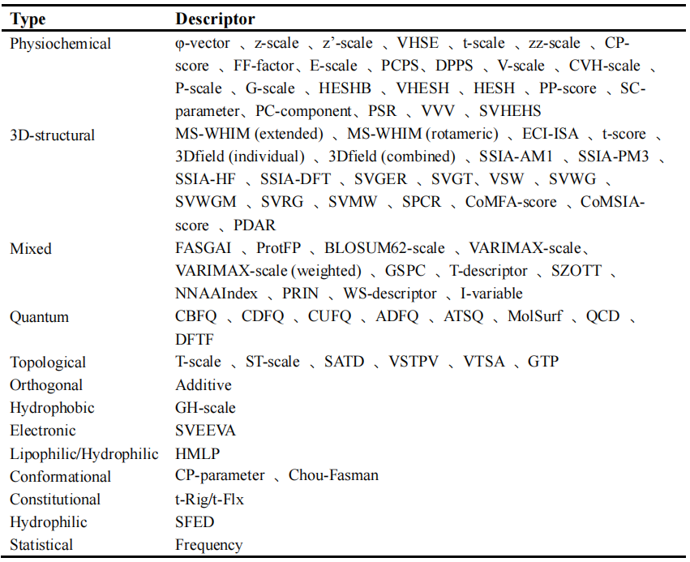
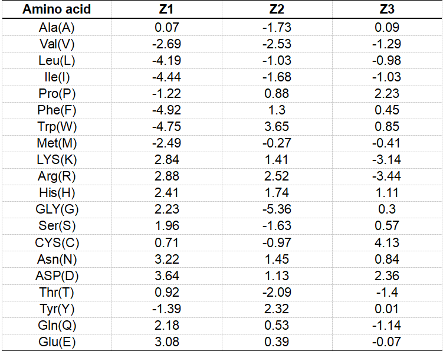

What is amino acid descriptor ?
- Amino acid descriptors are the quantitative values of topological properties, physicochemical properties and three-dimensional structural properties of amino acids, which are used for the quantitative description of the structure and properties of amino acids.
- Summary of amino acid descriptors in PepQSAR database

- At present, in the establishment of various quantitative structure-activity relationship (QSAR) models of peptides, the commonly used method is to collect a variety of physical and chemical properties of 20 amino acids, and then use principal component analysis (PCA) to extract several properties that can represent most of the information of the original parameter data.
- These principal component scores were used to characterize each amino acid of the peptide sequence. Finally, the peptide QSAR model was established based on the parameters obtained by characterization and experimental observation activity.
-
For example: z-scale amino acids descriptor table shows:
